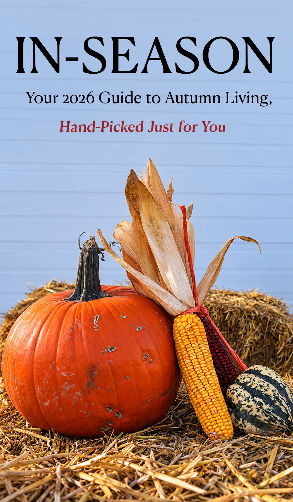

In Season Magazine
An editorial design project exploring seasonal storytelling through photography, typography, and magazine layout.

Welcome to my creative space.
An editorial design project exploring seasonal storytelling through photography, typography, and magazine layout.

An audio documentary exploring the forgotten history of Ottawa's Barrack Hill Cemetery, examining urban expansion, historical erasure, and the ethics of preserving burial sites.

An analysis of Indigenous Futurism though Meryl McMaster's Ancestral photography series.